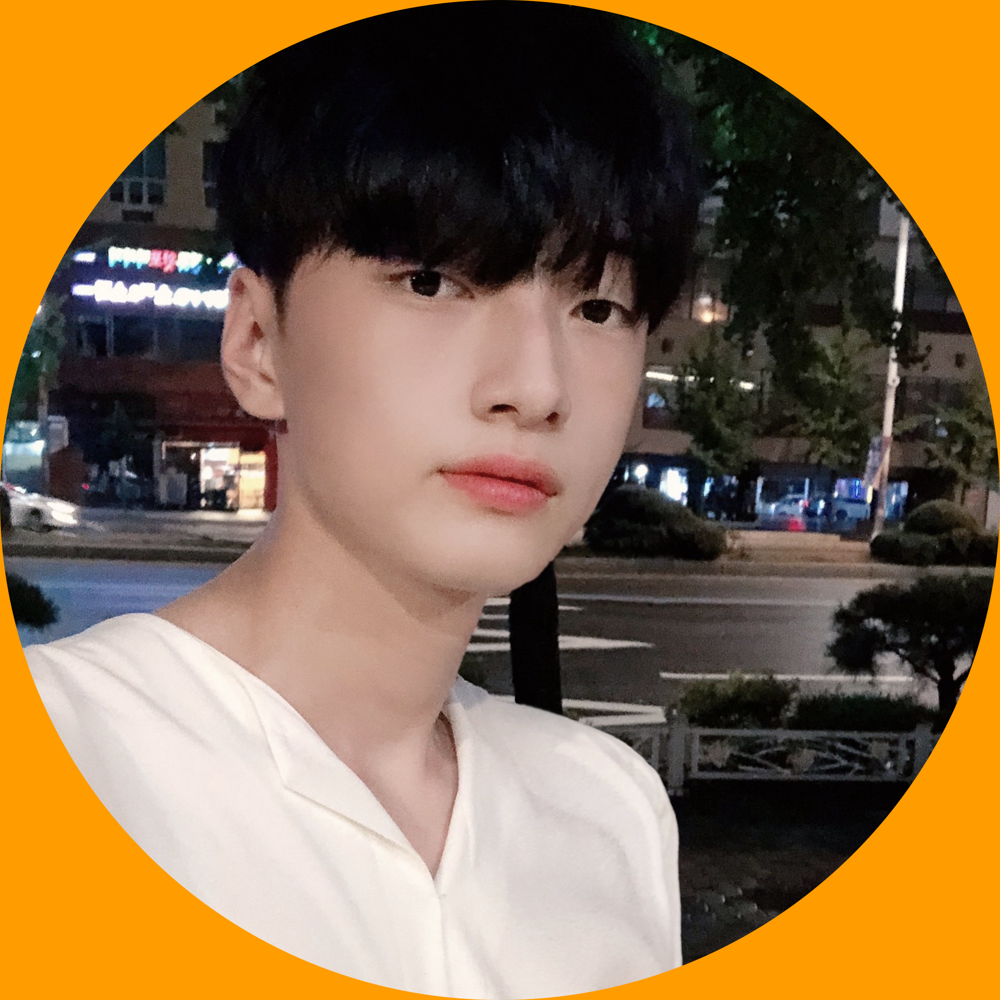

Hello, world!
Give inspiration, freezino
발표논문
-
심박수 측정 웨어러블 디바이스를 활용한 졸음운 전 예방 앱 제안Proposal of an app to prevent drowsy driving using a wearable device for heart rate measurement | 한국정보통신학회 2020 종합학술대회Link
-
길고양이 학대 예방을 위한 체험 VR 콘텐츠VR contents for Stray cat Experience for Prevent abuse of Stray cats | 한국정보통신학회 2020 종합학술대회Link
-
VR360 기반 아동 체험교육용 콘텐츠 사례VR360-based content for children’s experience education | 한국콘텐츠학회 2023 종합학술대회Link
-
VR360을 활용한 평화공원 투어 애플리케이션3Peace Park Tour Application Using VR360 | 한국콘텐츠학회 2023 종합학술대회Link
-
온라인쇼핑몰 상품 상세 페이지 디자인에 따른 고객 유입 통계Statistics of customer inflow according to the design of the product details page of the online shopping mall | 한국콘텐츠학회 2023 종합학술대회Link
-
웹디자인 수준에 따른 온라인 오픈마켓 판매성과 분석Analysis of Online Open Market Sales Performance Based on Web Design Quality | 한국콘텐츠학회 2024 종합학술대회Link
-
AR 기반 성형 결과 예측 시스템AR-based Cosmetic Surgery Result Prediction System | 한국콘텐츠학회 2024 종합학술대회Link
-
생성형 AI를 활용한 온라인 쇼핑몰의 안경 착용 시뮬레이션 제안A proposal for a simulation of wearing glasses in an online shopping mall using Generative AI | 한국콘텐츠학회 2024 종합학술대회Link
-
강화학습 기반 게임 플레이 피드백 시스템 제안Proposed game play feedback system based on reinforcement learning | 한국콘텐츠학회 2024 종합학술대회Link
-
모바일 QR코드 기반 헬스 머신 시뮬레이션 제안Proposed Health Machine Simulation Based on Mobile QR Code | 한국콘텐츠학회 2024 종합학술대회Link
프로젝트
학습
ㅁㄴㅇㅁㅇㄴㅇㄴㅁㅁㅇㄴ
About Me

부산가톨릭대학교, 주윤성
2025. 03 졸업예정
contact with freezino@kakao.com
2024
[교내]
- 창업동아리 "Inspiration" 동아리장
- 1학기 우수창업동아리 최우수상 (60만원)
- 2024 벤처스타트업아카데미사업단 참여
- "Unity Photon2 Engine을 이용한 멀티플레이 플랫포머 게임 구현" 프로젝트 진행
- 클라우드 AWS 실습 프로그램 참여
- 클라우드 AWS 기반 생성형 AI 실습 프로그램 참여
[교외]
- 한국콘텐츠학회 2024 종합학술대회 "웹디자인 수준에 따른 온라인 오픈마켓 판매성과 분석" 논문 발표
- 한국콘텐츠학회 2024 종합학술대회 "생성형 AI를 활용한 온라인 쇼핑몰의 안경 착용 시뮬레이션 제안" 논문 발표
- 한국콘텐츠학회 2024 종합학술대회 "모바일 QR코드 기반 헬스 머신 시뮬레이션 제안" 논문 발표
- 한국콘텐츠학회 2024 종합학술대회 "강화 학습 기반 게임 플레이 피드백 시스템 제안" 논문 발표
- 한국콘텐츠학회 2024 종합학술대회 "AR 기반 성형 결과 예측 시스템"논문 발표
- 2024 네이버 클라우드 플랫폼 공인교육 부트캠프 수료
- 2024 네이버 클라우드 NCA 자격증 취득
- 제 12회 K-해커톤 참여
- 제 10회 부산 창업 아이디어 경진대회 참여
- 2024 BDIA Dev-ton 참여중
- 2024 SW/콘텐츠 분야 벤처스타트업 아카데미 해커톤 진행중
- 울산 AI배울랑교 인공지능 교육전 디지털콘텐츠제작 및 AI 적용 실습 교육 진행중
- ㈜잼코딩학원 시간강사
2023
[교내]
- 부산가톨릭대학교 홍보대사 "트리니티" 부단장
- 창업동아리 "Inspiration" 동아리장
- 1학기 우수창업동아리 대상 (100만원)
- 2학기 학과 석차 1위
- 2학기 우수창업동아리 우수상 (60만원))
[교외]
- 한국콘텐츠학회 2023 종합학술대회 "VR360 기반 아동 체험교육용 콘텐츠 사례" 논문 발표
- 한국콘텐츠학회 2023 종합학술대회 "VR360을 활용한 평화공원 투어 애플리케이션" 논문 발표
- 한국콘텐츠학회 2023 종합학술대회 "온라인쇼핑몰 상품 상세 페이지 디자인에 따른 고객 유입 통계" 논문 발표
- 제 11회 K-해커톤 영남권 예선통과, 전국 본선 진출
2020-22
[교외]
- 한국정보통신학회 2020 종합학술대회 "심박수 측정 웨어러블 디바이스를 활용한 졸음운전 예방 앱 제안" 논문 발표
- 한국정보통신학회 2020 종합학술대회 "길고양이 학대 예방을 위한 체험 VR 콘텐츠" 논문 발표
- 쇼핑몰 웹디자이너(셀즈컴퍼니, 탑보그)
- ㈜신세계아이앤씨 쇼핑몰 솔루션 수퍼바이저(Sellpick)
2019
[교내]
- 부산가톨릭대학교 40대 총학생회 기획부 차장 역임
- 해외봉사활동 봉사단 선발
2019
[교내]
- 부산가톨릭대학교 소프트웨어학과 학년대표
- CUPBS 방송국 아나운서
- 독서공모전 우수상
- 교수 학습 능력 개발센터 프로그램 보고서 최우수상
안녕하세요!
저는 컴퓨터를 4살 때부터 했습니다. 키보드를 통해 한글과 영어를 배웠고, 유치원 시절에 온라인 게임을 하면서, 전 세계에 있는 사람들과 실시간으로 같이 만난다는 것이 너무 흥미롭고 신기했습니다. 이것을 계기로, 네트워크에 관심이 생겼고, 어떻게 구성되어서 어떻게 통신이 이루어지는지 찾아보곤 했습니다. 중학교에 진학해서는, 해킹과 보안 쪽으로도 관심이 생겨, 단체 모의 해킹과 해킹 대응 커뮤니티에서 활동하기도 했습니다. 이때 처음으로 리눅스와 백 트랙을 공부했었습니다. 이런 식으로 저는 종합적인 컴퓨터에 관한 관심으로, 조금씩 장래희망을 단순히 '프로그래머'라고 정하고, 지금 제가 있는 소프트웨어학과에 진학하게 되었고, 대학교에서 벤처스타트업 아카데미 프로그램에 참여하면서 클라우드 컴퓨팅과 인공지능에 대한 실질적인 경험을 쌓고, 전공과의 연계를 통해 자기 계발에 많은 성장을 이루었습니다. 또한, 여유가 되는 시간에는, 코딩학원에서 시간강사로 활동하며 미래의 대학생들에게 C언어, 파이썬, 아두이노, 앱 인벤터, 블록코딩을 강의하고있습니다.